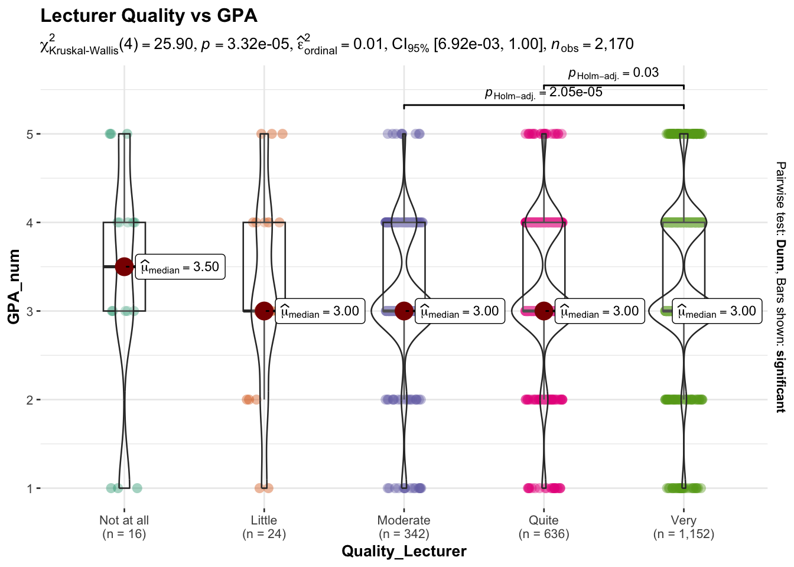
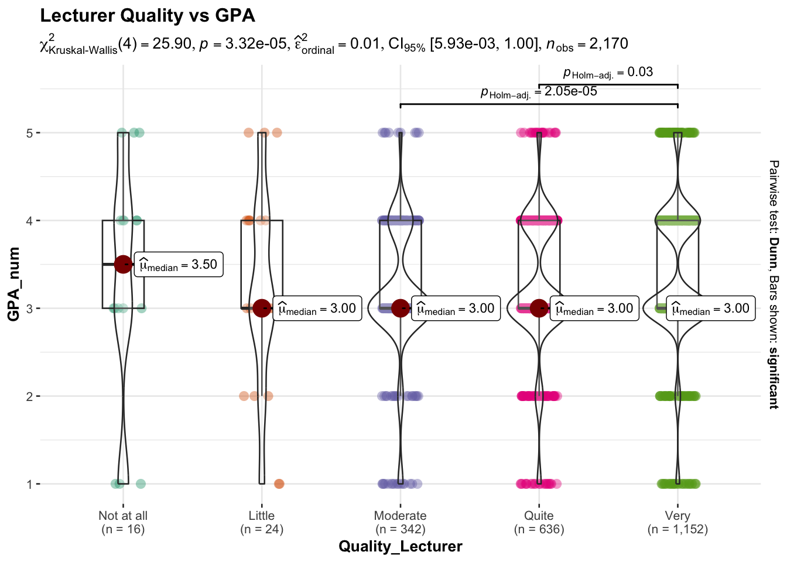
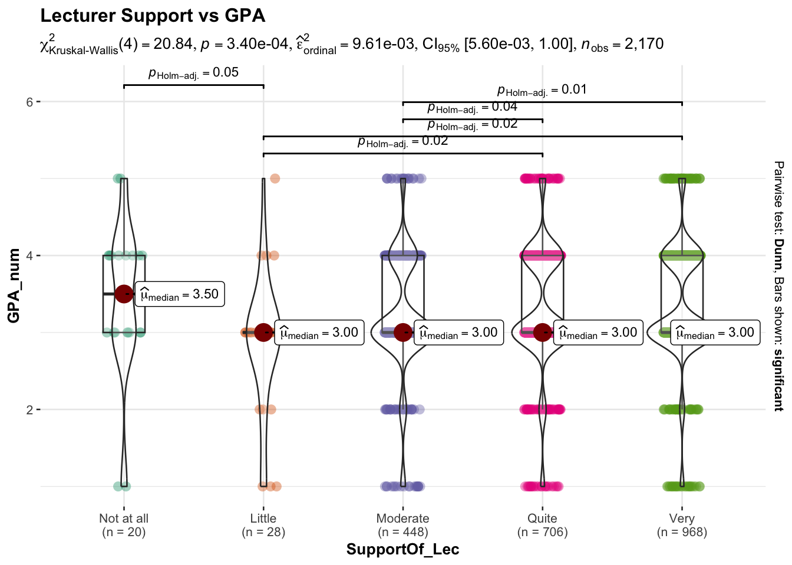

pacman::p_load(tidyverse, ggdist, ggridges, ggthemes, scales, ggstatsplot, colorspace)Take-home_Ex01
1. Introduction
1.1 Background
This study analyzes survey data collected from students at the University of Education, Vietnam National University, Hanoi. The dataset aims to explore factors potentially associated with students’ academic performance, measured using categorized GPA levels.
Understanding the relationship between academic outcomes and factors such as study behavior, institutional support, and perceived lecturer quality is important for identifying patterns that may contribute to student success.
1.2 Objectives
To reveal meaningful patterns, variables are organized into three conceptual domains:
Demographic factors (Gender, Year, Family background)
Behavioral factors (Study time, Social media use, Time with friends)
Institutional factors (Learning adaptation, Lecturer quality, Lecturer support)
Each factor is analyzed visually, followed by non-parametric comparisons and effect size estimation. The final section synthesizes and ranks factors by relative association strength.
2. Getting Started
2.1 Load Packages
We load the following R packages using the pacman::p_load() function to support data import, wrangling, visualisation, and statistical graphics: tidyverse: Core collection of packages for data wrangling (dplyr), data import (readr), and data visualisation (ggplot2). scales: Provides scaling functions (e.g., percentage labels) used in ggplot2 visualisations. ggthemes: Offers additional themes to improve plot aesthetics beyond default ggplot2 themes. ggridges: Used to create ridgeline density plots for comparing GPA distributions across ordinal groups. ggdist: Provides visualisations of distributions and uncertainty (e.g., median + interval plots using stat_pointinterval()). ggstatsplot: Produces enhanced statistical visualisations such as ggbetweenstats(), integrating non-parametric tests and effect sizes directly into the plots. colorspace: Supports colour palettes and colour manipulation utilities (useful when fine-tuning plot appearance).
2.2 Import data
The data for this exercise is retrieved from the publicly available survey dataset published on Mendeley Data (https://data.mendeley.com/datasets/23ppcdbmhc/1)
Database_paper <- read_csv("data/Database_paper.csv")The dataset contains 2,170 survey responses collected in 2023.
2.3 Variable Selection
In order to investigate factors associated with students’ academic performance (GPA), a subset of relevant variables was selected from the survey dataset based on theoretical relevance and analytical purpose.
The dependent variable in this study is GPA, treated as an ordered categorical variable ranging from Poor to Excellent.
The independent variables were selected across three broad dimensions:
Demographic factors (Gender, Poor household status)
Behavioral factors (Study time, Social media time)
Institutional factors (Learning adaptation, Lecturer support)
These variables were chosen because prior educational research suggests that academic outcomes are influenced by a combination of personal background, study behaviors, and institutional context.
Details of the selected variables are extracted from the survey Codebook and summarized in Table below.
| Category | Variable_Name | Description | Encoding |
|---|---|---|---|
| Academic outcome | GPA | Cumulative Grade Point Average | 1=Poor; 2=Average; 3=Fair; 4=Good; 5=Excellent |
| Demographic | Gender | Student gender | 1 = Male; 2 = Female |
| Demographic | Poor_Stu | Whether student belongs to poor household | 1 = Yes; 2 = No |
| Behavioral | Time_Studying | Average daily study time | 1=<2h; 2=1~2h; 3=2~3h; 4=3~4h; 5=>4h |
| Behavioral | Time_SocicalMedia | Average daily social media usage time | 1 = <1h … 5 = >4h |
| Institutional | Adapt_Learning_Uni | Level of adaptation to university learning environment | 1=Not at all; 2=Little; 3=Moderate; 4=Quite; 5=Very |
| Institutional | SupportOf_Lec | Level of lecturer support | 1=Not at all; 2=Little; 3=Moderate; 4=Quite; 5=Very |
We standardised the dataset by converting key variables into ordered factors with clear labels (1–5) for ordinal survey items, and recoding nominal variables (e.g., Gender, Poor_Stu) into descriptive categories to support consistent plotting and comparison.
df <- Database_paper %>%
mutate(
GPA_num = as.numeric(as.character(GPA)),
GPA_f = factor(
GPA,
levels = 1:5,
labels = c("Poor", "Average", "Fair", "Good", "Excellent"),
ordered = TRUE),
Time_Studying = factor(
Time_Studying,
levels = 1:5,
labels = c("under 1h", "from 1 to lower 2h", "from 2 to lower 3h", "from 3 to lower 4h", "over 4h"),
ordered = TRUE),
Time_SocicalMedia = factor(
Time_SocicalMedia,
levels = 1:5,
labels = c("under 1h", "from 1 to lower 2h", "from 2 to lower 3h", "from 3 to lower 4h", "over 4h"),
ordered = TRUE),
Time_Friends = factor(Time_Friends, levels = 1:5, ordered = TRUE),
Adapt_Learning_Uni = factor(
Adapt_Learning_Uni,
levels = 1:5,
labels = c("Not at all", "Little", "Moderate", "Quite", "Very"),
ordered = TRUE),
SupportOf_Lec = factor(
SupportOf_Lec,
levels = 1:5,
labels = c("Not at all", "Little", "Moderate", "Quite", "Very"),
ordered = TRUE),
Quality_Lecturer = factor(
Quality_Lecturer,
levels = 1:5,
labels = c("Not at all", "Little", "Moderate", "Quite", "Very"),
ordered = TRUE),
Competitive_Class = factor(Competitive_Class, levels = 1:5, ordered = TRUE),
Gender = factor(Gender, labels = c("Male", "Female")),
Poor_Stu = factor(Poor_Stu,
labels = c("Poor household", "Non-poor household")),
Year = factor(Year, levels = 1:5, ordered = TRUE)
)All ordinal survey variables were converted into ordered factors. GPA was treated as an ordered categorical variable. Numeric coding was used solely to facilitate rank-based visualization and non-parametric comparison.
Although the primary objective of this study is exploratory, non-parametric group comparisons (Kruskal–Wallis tests) are conducted where appropriate to assess whether observed differences across ordinal categories are statistically meaningful. Given that GPA and most explanatory variables are measured on ordinal scales, rank-based methods are preferred over parametric alternatives. Statistical results are interpreted alongside effect sizes to emphasize practical rather than merely statistical significance.
3. Overall GPA Distribution
To understand the general academic performance of students, we first examine the overall distribution of GPA categories. GPA is treated as an ordered categorical variable ranging from “Poor” to “Excellent.” Since the objective is exploratory rather than inferential, we focus on visualizing how GPA values are distributed across the student population. We use a bar chart to display the proportion of students in each GPA category. This allows clear comparison of relative frequencies and provides an intuitive overview of central tendency and dispersion. Percentages are used instead of counts to improve interpretability.

ggplot(df, aes(x = GPA_f)) +
geom_bar(aes(y = after_stat(prop), group = 1)) +
scale_y_continuous(labels = scales::percent) +
labs(
title = "Overall Distribution of GPA",
x = "GPA Category",
y = "Percentage of Students"
)The overall distribution of GPA categories reveals that the majority of students are concentrated in the “Fair” and “Good” performance levels, with noticeably fewer students in the “Poor” and “Excellent” categories. This indicates that academic outcomes within the sample are moderately centralized rather than highly polarized. The relatively small proportion of students at the extremes suggests limited academic disparity at both ends of the performance spectrum. The clustering around mid-level categories may reflect common institutional grading structures or similar academic engagement levels among students. Establishing this baseline distribution is important because it provides a reference framework for interpreting subgroup differences in subsequent analyses. Without understanding the central tendency and spread of GPA levels, it would be difficult to meaningfully evaluate whether behavioral or institutional factors correspond with substantial performance shifts.
4. Demographic Factors
4.1 Gender and GPA
To examine whether demographic characteristics influence academic outcomes, we compare GPA distribution across gender groups. Gender is treated as a categorical variable with two levels: Male and Female. GPA remains an ordered categorical variable.
We use a grouped bar chart showing the percentage distribution of GPA within each gender. Displaying proportions rather than raw counts allows fair comparison across groups regardless of group size. The side-by-side bars facilitate visual comparison of performance patterns.

ggplot(df, aes(x = GPA_f, fill = Gender)) +
geom_bar(aes(y = after_stat(prop), group = Gender),
position = "dodge") +
scale_y_continuous(labels = scales::percent) +
labs(
title = "GPA Distribution by Gender",
x = "GPA",
y = "Percentage"
)The GPA distributions for male and female students show substantial overlap across all performance categories. Both groups are predominantly concentrated in the “Fair” and “Good” categories, with nearly identical proportions in the central “Fair” category. Female students display a slightly higher proportion in the “Excellent” category and a marginally lower proportion in the lower GPA categories compared to male students. However, the magnitude of these differences appears modest, and no strong structural separation between gender groups is visually evident. The parallel distribution patterns suggest that gender does not meaningfully differentiate academic outcomes in this sample. Overall, while minor proportional shifts exist, the demographic effect of gender on GPA composition appears limited relative to other behavioral or institutional factors examined later in the analysis.
4.2 Family Economic Status and Academic Performance
Family economic background was proxied using the binary survey indicator Poor_Stu (Poor household vs Non-poor household). GPA distributions were compared between the two groups using grouped percentage bar charts. Proportions were computed within each economic category to ensure meaningful structural comparison. This visually driven approach enables assessment of distributional shifts without assuming numeric distance between GPA categories.

ggplot(df, aes(x = GPA_f, fill = factor(Poor_Stu))) +
geom_bar(aes(y = after_stat(prop), group = factor(Poor_Stu)), position = "dodge") +
scale_y_continuous(labels = scales::percent) +
labs(title = "GPA Distribution by Family Economic Status", x = "GPA", y = "Percentage") +
theme_minimal()Students from non-poor households demonstrate a moderately higher concentration in the “Good” and “Excellent” GPA categories compared to those from poor households. Conversely, students from poor households show a noticeably higher proportion in the “Fair” category, indicating a slight downward shift in performance distribution. Although the differences are visually detectable, the overall distributional overlap remains considerable across most GPA levels. The majority of students in both groups fall within the central performance categories, suggesting that economic background influences GPA composition only to a limited extent. While the non-poor group appears to have a modest advantage in higher performance categories, the magnitude of separation is not large. Compared with behavioral factors such as study time or adaptation measures examined later, economic status appears to exert a relatively weaker structural association with academic performance outcomes.
5. Behavioral Factors
5.1 Study Time and GPA Composition
To examine how daily study duration relates to academic performance, we compare the proportional distribution of GPA categories across study-time groups. Study time is treated as an ordered categorical variable representing increasing hours of daily study, while GPA is recoded into ordered categories ranging from “Poor” to “Excellent.”
A 100% stacked bar chart is used to visualize the composition of GPA within each study-time group. This approach allows direct comparison of the relative share of performance categories across groups, independent of sample size differences. By standardizing each bar to 100%, we focus on structural differences in performance distribution rather than absolute counts.

ggplot(df, aes(y = Time_Studying, fill = GPA_f)) +
geom_bar(position = "fill", width = 0.65) +
scale_x_continuous(labels = scales::percent) +
labs(
title = "GPA Composition by Study Time",
x = "Percentage",
y = NULL,
fill = "GPA Category"
) +
theme_minimal() +
theme(legend.position = "bottom")Students who reported longer daily study durations exhibit a clearer upward shift in GPA composition compared to those studying fewer hours per day. Specifically, the proportion of students in the “Good” and “Excellent” categories increases progressively with higher study-time categories, while the share of lower performance categories declines. This pattern appears directionally consistent and more structurally distinct than demographic variables previously examined. Although overlap remains across groups, the monotonic trend suggests a meaningful behavioral association between study engagement and academic outcomes. The visual gradient across study-time levels indicates that increased study duration corresponds with improved GPA distribution. Compared to gender and economic background, study time demonstrates a more coherent and interpretable pattern of performance differentiation, highlighting behavioral engagement as a relatively stronger correlate of academic achievement within this sample.
6. Institutional Factors
6.1 Learning Adaptation and GPA
Students’ adaptation to the university learning environment was examined as an institutional factor potentially associated with academic performance. GPA was treated as an ordered categorical variable, and proportions were calculated within each adaptation level to allow fair structural comparison. A visually driven grouped percentage bar chart was used to evaluate distributional shifts across adaptation categories.

ggplot(df, aes(x = Adapt_Learning_Uni, y = GPA_num)) +
stat_pointinterval(
point_interval = median_qi,
.width = 0.95
) +
labs(title = "GPA by Learning Adaptation Level")A clear directional pattern is observed across adaptation levels. Students reporting higher levels of adaptation demonstrate progressively greater proportions in the “Good” and “Excellent” GPA categories, alongside reduced representation in lower performance categories. Unlike demographic variables, which showed minimal structural separation, adaptation reveals a more consistent upward gradient in academic performance distribution. Although overlap remains across groups, the shift in composition appears more pronounced and visually coherent than that observed for social media usage or economic status. The monotonic trend suggests that students who feel better adjusted to the university learning environment tend to cluster more strongly in higher GPA categories. While the magnitude of separation is not extreme, adaptation emerges as one of the more structurally differentiated institutional factors examined in this analysis.
6.2 Lecturer Quality and GPA
Perceived lecturer quality was analyzed as an institutional variable reflecting instructional environment. GPA distributions were compared across quality perception levels using grouped percentage bar charts, with proportions calculated within each category to ensure comparability. This visually driven approach enables evaluation of structural differences without assuming interval-scale properties.

ggbetweenstats(
data = df,
x = Quality_Lecturer,
y = GPA_num,
type = "np",
messages = FALSE,
title = "Lecturer Quality vs GPA"
)Students who rated lecturer quality more positively display a modest increase in the proportion of “Good” and “Excellent” GPA categories relative to those reporting lower quality perceptions. However, substantial overlap remains across groups, particularly within the dominant “Fair” category. Although an upward trend is observable, the gradient appears less pronounced than that observed for adaptation or study time. The distributional shifts suggest a positive but moderate association between perceived instructional quality and academic performance. Differences between adjacent quality levels are relatively small, indicating limited structural separation. Compared with behavioral engagement and learning adaptation, lecturer quality appears to exert a weaker influence on GPA composition, though it remains directionally consistent with improved academic outcomes.
6.3 Lecturer Support and GPA
To further explore lecturer-related factors, we analyze GPA distribution across levels of perceived lecturer support. Lecturer support is treated as an ordered Likert-scale variable.
We use a boxplot with non-parametric comparison to examine differences in GPA across support levels. This method allows evaluation of median shifts while accommodating the ordinal nature of the data.

ggbetweenstats(
data = df,
x = SupportOf_Lec,
y = GPA_num,
type = "np",
messages = FALSE,
title = "Lecturer Support vs GPA"
)The analysis of GPA across levels of perceived lecturer support reveals a similar pattern to lecturer quality, with modest upward shifts in median GPA as support levels increase. Students who report higher levels of lecturer support tend to demonstrate slightly more favorable academic distributions, particularly within the upper GPA categories. However, the interquartile ranges continue to overlap across groups, indicating that differences, while present, are not substantial in magnitude. The visual pattern suggests a positive but moderate association between perceived support and academic outcomes. The limited separation between groups implies that lecturer support likely interacts with additional factors—such as study behavior or personal motivation—in shaping overall performance. Therefore, while lecturer support appears to contribute to academic achievement, it should be interpreted as one of several interconnected influences. Similar to lecturer quality, the effect size remains small, indicating that the association, although statistically significant, explains only a limited proportion of variation in GPA.
7. Summary
7.1 Overall Key Observations
This visually driven survey analysis reveals several consistent patterns regarding factors associated with categorized academic performance.
First, demographic characteristics such as gender exhibit minimal structural differentiation in GPA distribution. Although small proportional differences are observable, substantial overlap persists across all performance categories, suggesting limited demographic influence.
Second, family economic status shows modest association with GPA composition. Students from non-poor households demonstrate slightly higher representation in upper GPA categories; however, distributional overlap remains considerable, indicating only moderate differentiation.
Third, among behavioral factors, daily study time demonstrates the clearest monotonic pattern. Higher study durations correspond with progressively stronger concentration in “Good” and “Excellent” GPA categories, indicating a relatively stronger structural association compared to demographic variables.
Fourth, social media usage exhibits minimal and inconsistent distributional shifts, suggesting weak differentiation in academic outcomes.
Fifth, among institutional factors, adaptation to university learning demonstrates a clearer upward gradient in GPA composition. Students reporting stronger adaptation cluster more frequently in higher performance categories.
Finally, perceived lecturer quality and lecturer support show positive but modest associations, with observable yet limited distributional separation.
Overall, behavioral engagement and learning adaptation appear to demonstrate more structurally coherent relationships with GPA distribution than demographic characteristics or isolated institutional perceptions.
7.2 Interpretation
While several variables show observable distributional differences, the magnitude of separation across most factors remains moderate. The findings suggest that academic performance is influenced by multiple interacting elements rather than a single dominant predictor.
Behavioral engagement, particularly study time, and institutional adaptation display more consistent structural gradients, indicating stronger relative alignment with academic outcomes. In contrast, demographic characteristics such as gender and economic status appear to exert comparatively weaker influence within this dataset.
Importantly, these results represent associative patterns derived from cross-sectional survey data. The analysis does not establish causal relationships, and potential interactions between variables were not modeled.
7.3 Limitations
Several limitations should be acknowledged.
First, the dataset relies on self-reported survey responses, which may introduce reporting bias or subjective interpretation of scale categories.
Second, GPA was analyzed as an ordered categorical variable. While this preserves ordinal integrity, it reduces granularity relative to continuous GPA measures.
Third, group sizes across certain response categories are imbalanced, which may affect the stability of proportional comparisons.
Finally, the analysis is exploratory and visually driven. Although it identifies structural patterns, it does not control for confounding variables or model potential interactions among demographic, behavioral, and institutional factors.
5.2 Social Media Usage and GPA
Daily social media usage was examined as a behavioral variable potentially associated with academic performance. GPA category distributions were compared across usage-level groups using grouped percentage bar charts. Proportions were calculated within each social media category to allow structural comparison without assuming interval distance between GPA levels.
The GPA distributions across social media usage levels reveal minimal structural differentiation. While slight proportional fluctuations appear across categories, no clear monotonic pattern emerges between time spent on social media and academic performance. The majority of students in all usage groups remain concentrated within the “Fair” and “Good” GPA categories, and differences in the “Excellent” and lower categories are modest. The absence of a consistent directional gradient suggests that daily social media time alone does not meaningfully distinguish academic outcomes within this dataset. Although small distributional shifts may be present, the overall overlap across usage groups remains substantial. Relative to study time, which demonstrated a clearer association pattern, social media usage appears to exhibit a weaker and less structurally coherent relationship with GPA composition.